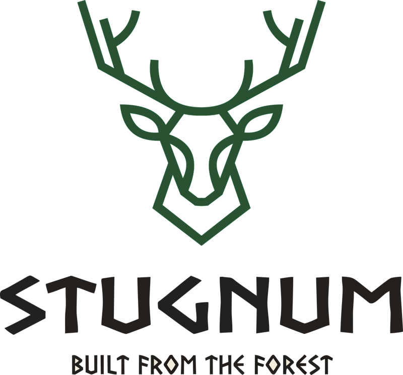

Советы
Советы
Как подготовить участок под беседку или террасу
Разметка, фундамент, дренаж — что нужно сделать до того, как привезём первую доску. Чек-лист по шагам.
Скоро
Статьи про дерево, строительство, уход за постройками и ошибки, которые мы видели на чужих объектах.
Советы
Разметка, фундамент, дренаж — что нужно сделать до того, как привезём первую доску. Чек-лист по шагам.
Скоро Разбор
Разбор
Торец впитывает влагу в 5–10 раз активнее боковой поверхности. Рассказываем, как правильно закрывать торцы и какие составы работают.
Скоро Сравнение
Сравнение
Честное сравнение трёх материалов по цене, сроку службы, уходу и ощущениям под босой ногой.
СкороЗапускаем блог постепенно. Если есть тема, которую хочется разобрать — напишите, добавим в план.
Предложить тему